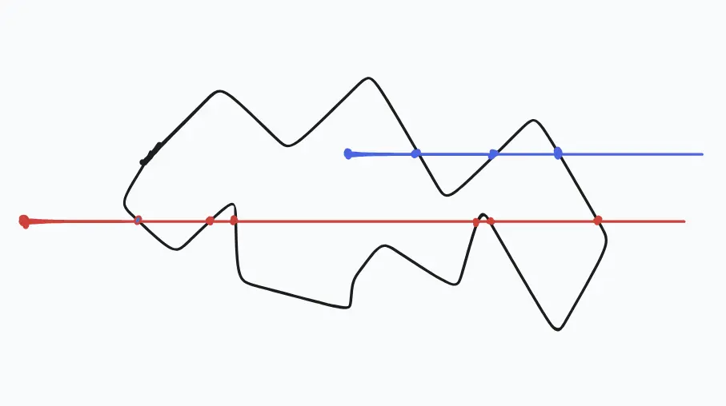
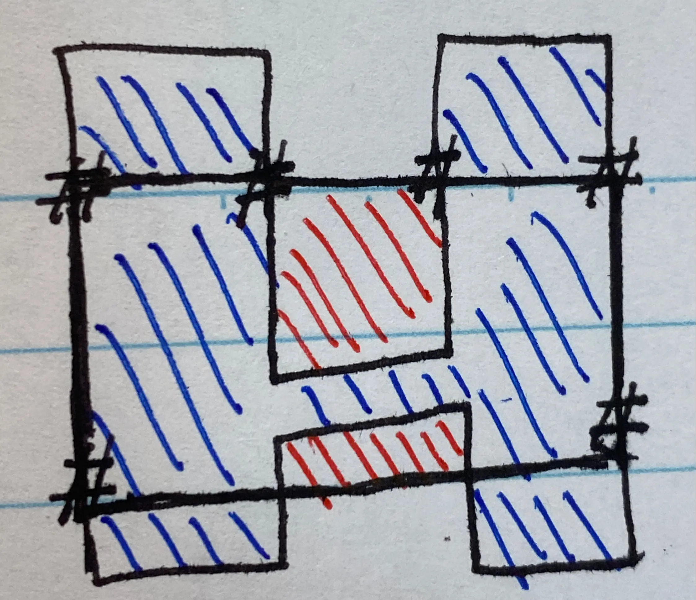

Advent of Code 2025 day9
day9 的输入是：
7,1 11,1 11,7 9,7 9,5 2,5 2,3 7,3
这是一系列的坐标点，例如 7,1 表示的是 x=7,y=1 的一个位置，用 # 标记这些位置，可以得到下面的图：
.............. .......#...#.. .............. ..#....#...... .............. ..#......#.... .............. .........#.#.. ..............
part1 的问题是，用任意两个点作为对角，形成一个矩形，当前的输入中，可以形成的矩形面积最大是多少。
例如 2,5 和 9,7 可以形成这样的矩形：
.............. .......#...#.. .............. ..#....#...... .............. ..OOOOOOOO.... ..OOOOOOOO.... ..OOOOOOOO.#.. ..............
面积是 24。
part1 的思路挺简单的，遍历所有的坐标，任意两个坐标组合到一起，计算形成的矩形面积，返回最大的面积即可。
part2 的问题是，现在的坐标会形成一个封闭的区域，变成这样：
.............. .......#XXX#.. .......XXXXX.. ..#XXXX#XXXX.. ..XXXXXXXXXX.. ..#XXXXXX#XX.. .........XXX.. .........#X#.. ..............
还是同样的输入，还是任意选择两个对角的点，求可以形成的最大矩形面积。但是新增了一个约束条件，形成的矩形，只能由 # 或者 X 组成，不能包含 . ，也就是说对角形成的矩形，必须在这个封闭区域的内部。
思考了一下，如果要求形成的矩形在封闭区域内部，意味着矩形的四个顶点也应该在封闭区域内，不能超出封闭区域。# 对应的坐标点肯定在轮廓的边上，我只要判断矩形的另外两个对角点在不在封闭区域内不就好了？
但是怎么判断一个点是否在一个封闭轮廓内呢？对此我也没什么头绪，求助了 LLM，了解到可以用 点射法。
点射法，也叫射线投射算法（Ray casting algorithm），它基于一个观察：如果一个点沿着一条射线从无穷远移动到探测点，并且它穿过了多边形的边界（可能多次），那么它会交替地从外部进入内部，然后从内部进入外部，依此类推。因此，每两次「越界(border crossing)」后，移动点就会回到外部。
{kind=link}

于是尝试了点射法（顺便复习了一下怎么构造直线方程），遍历每一个组成矩形的顶点，看看它们是否在封闭区域中，过滤出符合条件的矩形、计算面积、找到最大的矩形面积，兴高采烈地输入答案，结果是错的。_(:3 」∠)_
估计是漏了什么条件没有考虑到，想了好久也没想出来，就去翻了 reddit，从评论里我意识到了一种可能 ⸺ 封闭区域可能是凹进去的！
示例让我以为实际输入也是类似的图案，但 实际图案 可能是凹的，例如：
{kind=link}

如 图 2 所示，尽管选取的矩形四个顶点都在封闭区域内，但是由于封闭区域是凹的，封闭区域会穿透矩形，导致矩形有一部分区域（红色部分）不在封闭区域中，这样的矩形是不符合 part2 的要求的。
怎么判断这种情况呢？可以通过判断矩形的每一条边是否和封闭区域的边相交，如果没有相交，说明封闭区域没有穿透矩形，这样的矩形就是满足条件的；如果相交了（如 图 2），说明封闭区域穿透了矩形，这样的矩形是不满足条件的。
因此，解决 part2，需要：
- 遍历所有可能的矩形的四个顶点，使用点射法，判断顶点是否都在封闭区域内
- 遍历所有可能的矩形的四条边，判断是否和封闭区域的边相交
代码写起来边界条件比较多，判断也很多，最后找 LLM 帮忙写了一个版本（偷懒了）。这个版本运行了将近一分钟才得到结果 _(:3 」∠)_。我自己写的话，估计要写很久，调试很久才行。
这次是练习 python，python 中有很多有用的库，其中 shapely 就很擅长处理平面几何的问题。利用其中的 Polygon ，传入一组顺序的坐标点，就可以构造得到一个多边形；Polygon 生成的对象上有一个 within 方法，可以判断包含关系，利用它就可以轻易判断矩形是否在封闭区域内了。
相关的代码可以看看 Yordi Verkroost 的 Advent of Code 2025 - Day 9，比用点射法来得要方便很多，也不容易出错。
day9 的 part2 对我来说还挺难的，没什么头绪，挣扎了很久。不过也因此了解了点射法，了解了 shapely，也算有所收获。